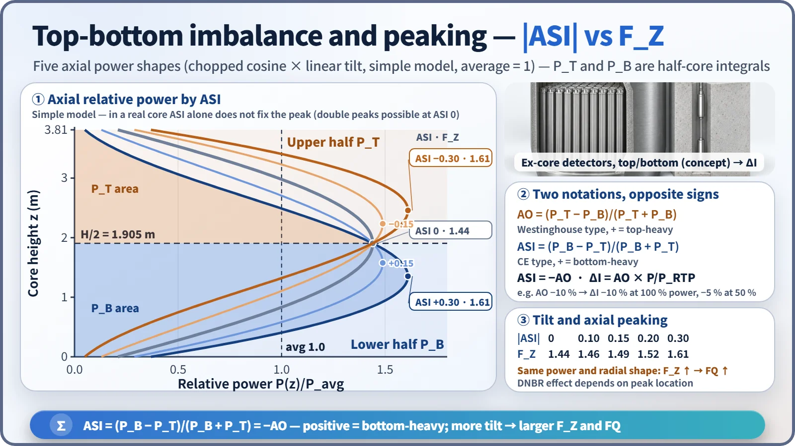
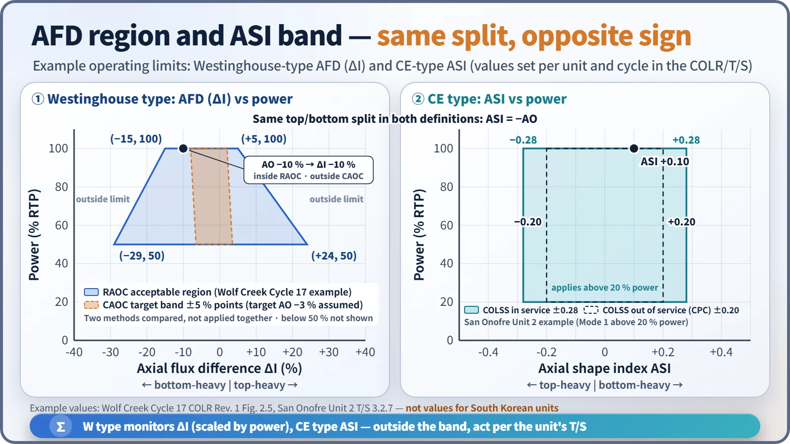
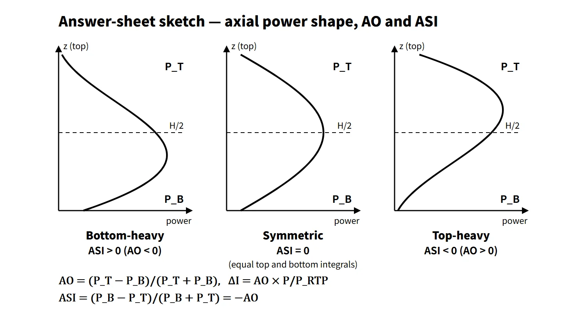

Reactor Physics & Kinetics · C-RX-016
Axial Power Distribution and ASI (AO) — Managing the Top-Bottom Tilt with a Single Number
How the top-bottom power tilt is summarized as AO, ΔI or ASI, why the signs differ, and how the tilt is measured and controlled.
The axial power distribution is the shape of the power along the core height, and it is managed through an index equal to the difference between the upper- and lower-half powers divided by their sum: Westinghouse-type plants use AO = (PT − PB)/(PT + PB) and ΔI = AO × P/PRTP, CE-type plants use ASI = (PB − PT)/(PB + PT), and for the same distribution the two have opposite signs.
PT is the integrated power (area under the curve) of the upper half of the core and PB that of the lower half. Positive AO means top-heavy; positive ASI means bottom-heavy. This sign is the most common source of error.
Principle and mechanism
Starting from a chopped cosine
The axial flux of a homogeneous cylindrical core is a cosine. Because the extrapolated boundary lies outside the heated length, within the fuel it becomes a chopped cosine. In a real core several factors tilt this shape up or down.
Four factors that change the distribution
- Control rod insertion: PWR rods enter from the top, so absorption in the upper core increases and power moves down (ASI +, AO −).
- Moderator temperature and density: the coolant heats from bottom to top, so its density is lower in the upper core. With a negative MTC the upper core has less reactivity and power leans toward the bottom. The effect is stronger at higher power and with a more negative MTC.
- Burnup distribution: regions with high power burn first, lose reactivity, and the distribution flattens itself.
- Xenon distribution: after a change in power or rod position, xenon redistributes with a delay of several hours and moves the power again.
Doppler feedback, axial blankets and the top/bottom cutback of burnable absorbers also have an effect.
Tilt and peaking (worked example)
A chopped cosine was multiplied by a linear tilt [1 + c·(z − H/2)/(H/2)], with c adjusted to give each target ASI:
| ASI (CE) | AO (W) | FZ | Peak height |
|---|---|---|---|
| +0.30 | −30 % | 1.61 | 1.35 m |
| +0.15 | −15 % | 1.49 | 1.58 m |
| 0 | 0 % | 1.44 | 1.91 m |
| −0.15 | +15 % | 1.49 | 2.23 m |
| −0.30 | +30 % | 1.61 | 2.46 m |
In this model FZ grows as |ASI| grows, and with the separable approximation (FQ ≈ FR × FZ), FQ grows too. In a real core, however, ASI alone does not determine the peak: even at ASI = 0 a double peak can be large. The effect on DNBR depends on the peak location and coolant conditions; a peak in the upper core, where coolant enthalpy is high, is generally less favorable.

Change with burnup and xenon stability
At BOC the distribution is bottom-heavy (ASI +) because of the moderator temperature effect and partial insertion of the regulating bank. As burnup proceeds, the lower core burns first, power moves upward and the distribution flattens; by EOC it is flat or double-peaked (saddle-shaped). The flatter the distribution, the weaker the coupling between the fundamental mode and the first axial mode, so in general stability against axial xenon oscillation decreases toward EOC. The more negative EOC MTC works in the damping direction, but the flattening effect is considered larger.
Xenon oscillation in brief
When power shifts to the top, xenon burnout in the upper core increases and reactivity rises further (positive feedback); a few hours later the extra iodine decays to xenon and pushes the power back down. Total power stays almost constant while only the spatial distribution oscillates, with a period of roughly a day.
What it means in a plant
- Design and safety: an axial tilt reduces the FQ and linear heat rate (LHR) margins through FZ. It bears on the LOCA peak cladding temperature and the fuel centerline melt limit, and a top-heavy shape also reduces the DNBR margin.
- Westinghouse type: ΔI is obtained from the difference between the upper and lower ion-chamber signals of four ex-core channels. The AFD is kept within the acceptable region during operation. The overtemperature ΔT trip carries an f(ΔI) penalty (e.g. Wolf Creek, setpoint reduced for ΔI < −23 % or > +5 %).
- CE type (OPR1000, APR1400): the CPC synthesizes the axial distribution from three-level ex-core signals with a shape transformation matrix and calculates the LPD and DNBR trips. COLSS monitors the LHR and DNBR margins and ASI with fixed in-core detectors.
- Calibration: ex-core detectors see only the core periphery, so they are calibrated periodically against in-core measurements (flux maps, fixed rhodium detectors).
Control devices and operating methods
- Part-strength control rods (PSCEA): weak-absorber (Inconel) rods in CE-type plants. They change reactivity very little and adjust only the axial distribution, suppressing xenon oscillation. APR1400 also controls the distribution with full-strength regulating banks.
- Westinghouse part-length rods: present in early designs but removed from operation; the operating procedures below are used instead.
- CAOC: ΔI is held in a band (±5 % points) around a constant target AO, with a limit on the time spent outside the band. The same AO of −10 % is ΔI −10 % at 100 % power but −5 % at 50 %.
- RAOC: a trapezoidal acceptable region set by analysis, widening at lower power. Example: Wolf Creek Cycle 17, −15 to +5 % at 100 % and −29 to +24 % at 50 %.
- CE-type ASI band: for example, San Onofre Unit 2 uses ±0.28 with COLSS in service and ±0.20 with COLSS out of service (above 20 % power).
- Operating principle: adjust reactivity with boron and the distribution with rods. If an oscillation appears, move the rods in the opposite direction timed to the half-period.

Regulatory and design criteria
The criteria below are examples from US NRC regulations, standard technical specifications and review guidance.
| Basis | Key point |
|---|---|
| 10 CFR 50 App. A GDC 12 | Power oscillations that could exceed SAFDLs are not possible or are reliably detected and suppressed |
| GDC 10, 20 | SAFDLs not exceeded in normal operation and AOOs; automatic protection system action |
| NUREG-1431 LCO 3.2.3A/B | AFD (CAOC/RAOC) |
| NUREG-1432 LCO 3.2.5 | ASI (COLR limits) |
| NUREG-0800 SRP 4.3 | Review of power distribution and xenon stability |
| Technical specifications and COLR | AFD and ASI limits per unit and cycle |
The sequence of changes was removal of part-length rods → CAOC (1970s) → RAOC (1980s, WCAP-10216). Since the late 1980s the limit values have been moved to the COLR. The principles are unchanged, and the limits are set per unit and cycle in the COLR.
Easily confused pairs
| AO | ΔI (AFD) | ASI | |
|---|---|---|---|
| Definition | (PT − PB)/(PT + PB) | PT − PB (%RTP) | (PB − PT)/(PB + PT) |
| Used in | Westinghouse and French types | Westinghouse LCO | CE type (OPR1000, APR1400) |
| Positive means | Top-heavy | Top-heavy | Bottom-heavy |
| Power dependence | None | AO × P/PRTP | None |
Key points at a glance
- Definition: axial power distribution = the power shape along the core height (chopped cosine as the reference).
- AO = (PT − PB)/(PT + PB); ΔI = AO × P/PRTP (Westinghouse type).
- ASI = (PB − PT)/(PB + PT) (CE type) = −AO; positive means bottom-heavy.
- Four factors: control rods (shift down), moderator temperature (bottom-heavy), burnup (flattening), xenon (redistribution and oscillation).
- Burnup effect: bottom-heavy at BOC → flat at EOC, with lower xenon stability.
- Consequence: |ASI| ↑ → FZ and FQ ↑ → LHR and DNBR margins ↓.
- Measurement: upper/lower ex-core detectors (2 levels in W, 3 in CE), calibrated against in-core measurements.
- Control: part-strength rods, CAOC ±5 %, RAOC region, CE ASI band, boron and rods together.
- Basis: GDC 12, LCO 3.2.3/3.2.5, COLR.
